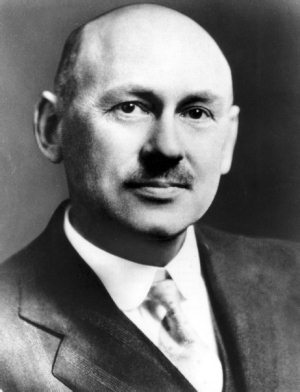
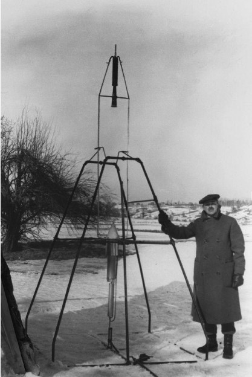
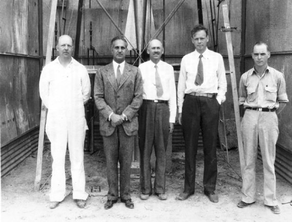

Ракеты Годдарда
В отличие от других стран, таких как Германия, Россия, Франция, которые могут «похвастаться» многими пионерами космонавтики, американцы гордятся только одним своим соотечественником – Робертом Годдардом. С его именем связаны многие разработки, на долгую перспективу определившие пути развития ракетной техники не только в США, но и во всем мире. В значительной степени именно ему мы обязаны тем, что ныне воспринимаем космические полеты как обыденность, а не как чудо.
Роберт Хитчингс Годдард родился 5 октября 1882 года в городе Вустере, в 55 километрах от Бостона, столицы американского штата Массачусетс. На момент рождения Годдарда Вустер был весьма развитым в промышленном и культурном отношении городом, и в нем проживало около 60 тысяч человек.
Детство и школьные годы Роберта прошли в Бостоне, одном из крупнейших центров экономики и культуры США, буквально нашпигованном промышленными предприятиями, научными институтами, лабораториями и библиотеками.
В автобиографии, написанной в 1927 году, Годдард отмечал, что уже в пятилетнем возрасте в нем проснулся экспериментатор. Первый предмет исследований – электрические разряды от трения различных предметов о домашний ковер. А в двенадцать лет его охватила настоящая страсть к изобретательству. Первая конструкция – инкубатор для лягушек. Не совсем удачная, но вполне научно обоснованная система.
Дальше – больше. В 1897 году Годдард решает построить аэростат неизменяемой формы. В домашних условиях ему удалось раскатать слиток алюминия в лист толщиной три миллиметра, из которого затем была сделана герметичная емкость в форме подушки. Далее Роберт наполнил эту емкость водородом, но поднять аэростат в воздух так и не удалось. Вероятно, корпус оказался слишком тяжел для столь смелого эксперимента.

Роберт Годдард (1882–1945)
1898 год стал рубежным для Годдарда. Зимой он прочитал роман Герберта Уэллса «Война миров», и просто «заболел» идеей создания ракет и космических путешествий. Хотя в своих дневниках, которые он начал вести приблизительно в то же время, Роберт днем начала своих космических устремлений называет 19 октября 1899 года, когда, «сидя на вишне, ощутил в себе мечту о полете на Марс». Но всю весну и лето 1898 года Годдард был занят запуском изготовленных собственноручно ракет. Это были еще обычные хлопушки, но с чего-то надо начинать.
Среди других его увлечений того года – физиология уха и глаза (одно время Роберт хотел стать медиком), луки и стрелы с различными наконечниками и оперениями, получение искусственных алмазов (эксперименты закончились взрывом гремучего газа). Одно это перечисление позволяет увидеть, сколь разнообразны были увлечения Годдарда. Можно предположить, что даже если бы Годдард выбрал иную стезю, то и там его имя не исчезло бы бесследно. Но это ясно теперь. А тогда Роберт только готовился вступить в самостоятельную жизнь.
Летом того же года Годдард окончил среднюю школу и поступил в Высшую английскую школу в Бостоне. Однако проучился Роберт в ней всего один год, после чего вернулся в свой родной Вустер, где к тому времени открылась Южная высшая школа с его любимой физикой в качестве главного предмета.
Возвращение на малую родину ознаменовалось еще одним важным событием, которое наложило отпечаток на всю дальнейшую жизнь Годдарда. У Роберта обострилась болезнь почек, и он был вынужден на два года прервать свое обучение в школе, занявшись самообразованием. В это время он много читает, размышляет о различных научных проблемах, начинает излагать свои мысли на бумаге. Болезнь не помешала ему продолжить свою изобретательскую деятельность. Круг интересов Годдарда по-прежнему не ограничивается только одной областью знаний. Он продолжает искать свое место в науке.
В марте 1901 года Годдард отправляет первую заявку на патент, в которой излагает идею создания устройства для фотографирования светящихся объектов в различных диапазонах спектра. И хотя ответ из патентной конторы «Манн и К°» оказался отрицательным, сама идея была признана верной в принципиальном отношении. В том же году Годдард пишет и публикует небольшую статью «Перемещение в космосе», в которой анализирует возможность запуска снаряда в космос с помощью пушки.
По Годдарду, для запуска 1 фунта (454 грамма) полезной нагрузки в сторону Луны необходимо было зарядить пушку 500 фунтами (227 килограммов) пороха. Полезным грузом при этом должен был стать пакет с магниевым порошком, вспышку от взрыва которого на лунной поверхности можно было бы наблюдать с Земли в мощный телескоп.
Естественно, осуществить этот эксперимент не представлялось возможным. Ни тогда, ни сейчас. Слишком многое не учитывал в своих расчетах автор идеи. Да и чего можно было ожидать от девятнадцатилетнего юноши, погруженного в себя и мыслящего категориями, оторванными от науки и базировавшимися на фантастической литературе? Но и этот этап становления Годдарду следовало пройти. Поэтому вспомним и мы об этих наивных начинаниях.
В последние годы своей учебы в Южной высшей школе, которую он окончил в 1904 году, Годдард увлекался радиотехникой, астрономией, вопросами интерференции света и звука, а также искусственной радиоактивностью. Свое образование он продолжил в Политехническом институте Вустера, где занимался исследованиями в области заряженных частиц, изучением природы электрической проводимости, проблемой скоростного наземного транспорта.

Роберт Годдард готовит к старту одну из своих ракет
В 1905 году Годдард впервые оглянулся назад и оценил то, что сделал в предыдущие годы. Итог его разочаровал. По его же определению – это был «комплект моделей, не способных работать, и комплект неосуществимых идей». Годдард сжег свои записи. Но новые идеи продолжали вертеться в его голове, и он вновь сел за письменный стол.
В 1906 году Годдард начал исследования, результатом которых стала публикация в следующем году работы «О возможности перемещения в межпланетном пространстве». В ней были рассмотрены многие важные вопросы, такие, например, как средства поддержания жизни в космосе, метеоритная опасность и борьба с ней, реактивный способ передвижения за счет энергии, выделяемой при сжигании пороха, возможность использования атомной энергии (!) для движения в космосе. В этот же период Годдард выдвинул ряд других ценных идей: использование магнитного поля Земли для космического полета, создание реактивной тяги за счет электростатического эффекта для движения аппарата в космосе, проведение фотосъемок Луны и Марса с облетных траекторий и прочие.
Годдардом же было выдвинуто и предложение о посылке заряда осветительного пороха на Луну с целью доказательства реального достижения ее поверхности. Спустя полвека, когда первые станции устремились к Луне, об этой идее вспомнили. Правда, доказать достижение поверхности нашего естественного спутника намеревались с помощью взрыва ядерной бомбы. Но время тогда было уже другое, бесшабашное и непутевое. Об этом проекте я также буду рассказывать в своей книге.
Многие из выдвинутых Годдардом в начале ХХ века идей впоследствии были осуществлены. Он сам получил на них 214 патентов, не говоря о многочисленных последователях и продолжателях.
В 1908 году Годдард окончил Политехнический институт со степенью бакалавра и тут же поступил в Университет Кларка все в том же Вустере. Одновременно он преподает в Политехе.
А с Кларковским университетом судьба Годдарда оказалась связанной на долгие годы. Там он преподавал с 1914 по 1943 год.
В 1909 году Годдард вторично подвел итоги своей научной деятельности. На этот раз результат был не столь удручающим, как четырьмя годами ранее, – изобретатель занес в свой актив 20 разработанных вопросов. В том же году он приступил к расчетам возможностей использования ракеты для космического полета и применения различных видов топлива, в первую очередь, пороха и водородно-кислородных смесей. Работы продолжались несколько лет, пока в июле 1914 года не были запатентованы конструкции составной ракеты с коническими соплами и ракеты с непрерывным горением в двух вариантах: с последовательной подачей в камеру сгорания пороховых частиц и с насосной подачей двухкомпонентного жидкого топлива.
Однако прошло еще немало лет, прежде чем ракеты Годдарда «научились летать». Этому препятствовали и отсутствие необходимых для строительства средств, и технические трудности, и многое другое. Например, в этот период Годдарду пришлось надолго прервать работу из-за туберкулеза легких. Но в конце концов здоровье удалось подправить, деньги на исследования дал Смитсонианский институт, и эксперименты начались.
Первые пуски ракет, не слишком удачные, состоялись в ноябре 1918 года. Но Годдард быстро преодолел трудности и заставил свои творения летать довольно успешно. Несмотря на достигнутые результаты, никак не удавалось привлечь внимание военного ведомства США к ракетной технике, что существенно ограничивало приток средств на продолжение работ. Но Годдарда это не останавливало, он находил все новые и новые гранты на свои работы и продолжал упорно идти в выбранном направлении.
В 1921 году Годдард перешел к экспериментам с жидкостными ракетными двигателями, о преимуществе которых перед пороховыми он начал писать за десятилетие до этого. В марте 1922 года на стенде был испытан первый жидкостный ракетный двигатель – маломощный, несовершенный.
А 16 марта 1926 года произошло событие, которое вписало золотыми буквами имя Годдарда в летопись мировой космонавтики – близ города Обурн в штате Массачусетс впервые в истории человечества был осуществлен успешный пуск ракеты с жидкостным ракетным двигателем с вытеснительной подачей топлива. Стартовая масса «малютки», которая известна ныне историкам космонавтики как «Нелл» (Nell) (изредка ее именуют еще «Годдард-1»), составляла всего 4,2 килограмма. Пролетела она 56 метров, поднявшись на высоту 12,5 метра. Весь полет занял две с половиной секунды. Но это была первая ракета, двигатели которой работали на жидком топливе. И означало это качественно новый этап в ракетной технике.
3 апреля состоялся второй и последний полет «Годдарда-1». Достигнутые результаты ненамного отличались от первого испытательного пуска – время нахождения в воздухе 4,2 секунды, максимальная высота подъема 15 метров.
Вторую свою ракету на жидком топливе Годдард стал строить в мае 1926 года. В январе следующего года состоялись стендовые испытания двигателя для «Годдарда-2». Однако эта ракета никогда не поднималась в воздух. На каком-то этапе проектирования конструктор пришел к выводу, что технические решения, которые он был намерен применить в ракете, ошибочны. И чтобы не заниматься «зряшным делом», переключился на проектирование новой ракеты, получившей впоследствии название «Годдард-3».
Основным отличием новой ракеты от предшественниц были не только размеры (длина – 3,5 метра, диаметр – 0,66 метра, стартовая масса – 25,7 килограмма), но и наличие в ее головной части научного оборудования – барометра, термометра, а также фотокамеры. Первый пуск «Годдарда-3» состоялся 26 декабря 1928 года. Это был испытательный запуск, без научного оборудования. Ракета поднялась на смехотворную высоту – 5 метров. Но Годдард смог убедиться в том, что она может летать.
Во время следующего запуска, состоявшегося 17 июля 1929 года, он установил на ракете приборы и фотокамеру. Полет прошел успешно. Высота, которую удалось достичь, составляла 25 метров. И, самое главное, во время посадки оборудование не получило никаких повреждений.
После этого пуска Годдард получил финансовую поддержку от Фонда Гуггенхеймов и смог на эти деньги оборудовать небольшой полигон с мастерской близ Розуэлла в штате Нью-Мексико. Все последующие пуски проводились именно с этого полигона. Впоследствии этот полигон «взяли под свое крыло» американские Военно-воздушные силы (ВВС), расширили его и превратили в то место, где испытывалась большая часть первых американских ракет. О нем я подробно расскажу в главе, где речь пойдет о пусках ракет «Фау-2» в США.
А пока же вернусь к рассказу о Годдарде. Ему принадлежит приоритет во многих вопросах ракетной техники. Первым в мире он поместил на борт ракеты научные приборы, первым оснастил ракету гирорулями, системой стабилизации в полете и был первым еще во многом.
В 1930 году очередная ракета Годдарда – «Годдард-4» – со стартовой массой в 21 килограмм уже поднимается на высоту 600 метров (пуск 30 декабря). При этом максимальная скорость движения превышала 800 километров в час.
В дальнейшем Годдард занимался вопросами стабилизации вертикального полета. Он применяет гироскопические управляемые рули в потоке истекающих газов, позже добавляет аэродинамические рули.
Первым эту идею выдвинул в начале ХХ века наш соотечественник Константин Эдуардович Циолковский, но Годдард стал первым, кто смог применить ее на практике. Первый успешный полет ракеты с гирорулями состоялся 19 апреля 1932 года.
В марте 1935 года 60-килограммовая ракета Годдарда («Годдард А») поднимается на высоту в 1,5 километра при дальности полета в 4 километра. А в мае того же года она уже достигает высоты в 2,3 километра при хорошей стабилизации.
Эти два эксперимента привлекли к себе наибольшее внимание публики. Годдард сделал о них сообщение на заседании научного общества в конце 1935 года и продемонстрировал два кинофильма, снятых во время испытаний. В этих фильмах была четко видна работа стабилизатора и двигателя, и если первый функционировал хорошо, то последний действовал явно неудовлетворительно. Ракеты оставляли за собой заметный хвост дыма, а иногда ниже сопла наблюдались вспышки в результате взрыва паров бензина в воздухе.

Роберт Годдард и его сотрудники
Наибольшая высота, на которую поднялись ракеты Годдарда, составила 2,8 километра (ракета «Годдард Л-Б», март 1937 года). Тогда-то конструктор и пришел к выводу, что жидкостные двигатели с вытеснительной подачей топлива исчерпали свои возможности, и перешел к разработке турбонасосных систем. Годдард создает превосходные по тем временам турбину, газогенератор и центробежные насосы. Но это не приводит к успеху, на который он рассчитывал. О том, что сделанное Годдардом предположение было не таким уж бесспорным, я писать не буду.
До начала Второй мировой войны Годдард работал в основном в одиночку. Уж таков был характер этого человека. Он считал ракетную технику «своим личным заповедником», а всех других, в ней работающих, – браконьерами. Может быть, этот фактор и повлиял на то, что до получения первых данных о немецких ракетах в США довольно прохладно относились к работам Годдарда, сосредоточив основные усилия на авиастроении.
Но война все изменила, и в 1942 году Годдард поступает на службу на американский флот. Вплоть до своей смерти 10 августа 1945 года в результате неудачной операции на горле, он руководил созданием жидкостных ракетных двигателей для самолетных ускорителей.
И еще один немаловажный штрих в биографии Годдарда, о котором часто забывают. В послевоенные годы американские ракетчики взяли за основу немецкие ракеты, сконструированные Вернером фон Брауном. Ему в дальнейшем и достались все лавры первопроходца. Но как-то выпадает из поля зрения историков тот факт, что сам немец в своей работе опирался на идеи Константина Циолковского и Роберта Годдарда. И фон Браун никогда не забывал об этом повторять. Это к вопросу о том, что было раньше: курица или яйцо.